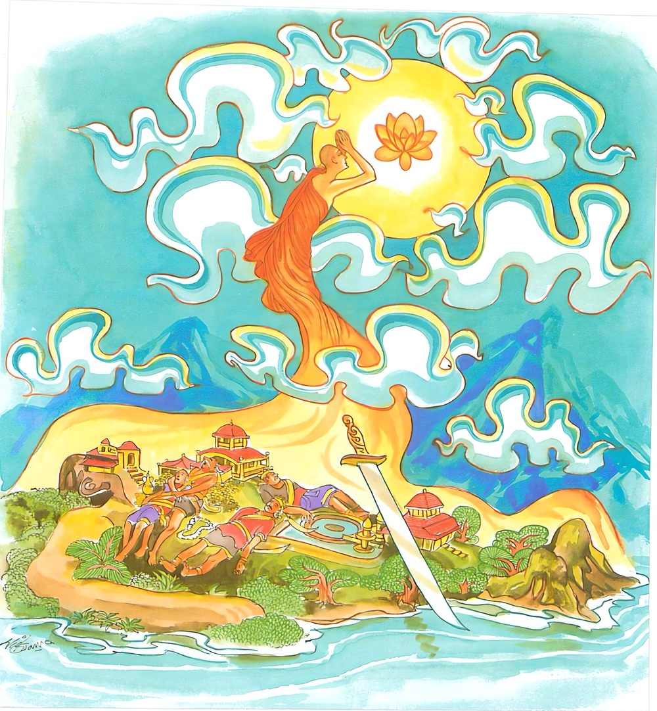
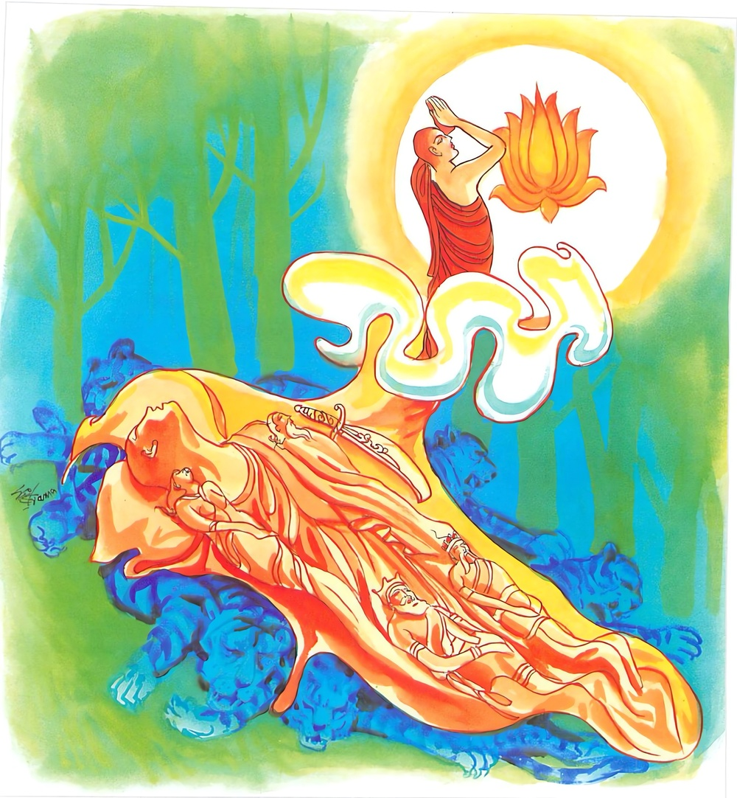

21-4 ලකුණ්ඨක භද්දිය තෙරුන් පිළිබඳ කථා පුවත
මෙම කතාව සද්ධර්ම සාගරයෙන් ද කියවන්න.
මාතරං පිතරං හන්ත්වා රාජානො ද්වෙ ච ඛත්තියෙ
රට්ඨං සානුචරං හන්ත්වා අනීඝො යාති බ්රාහ්මණො.
(තෘෂ්ණා නැමැති) මව ද, (අස්මිමාන නැමැති) පියා ද, (ශාශ්වතදෘෂ්ටි උච්ඡේදදෘෂ්ටි නැමැති) ක්ෂත්රිය රජුන් දෙදෙනා ද (රහත්මඟ නැණ නැමැති) කගින් වනසා, (නන්දිරාග නැමැති) අයකැමියා සහිත (ද්වාදශායතන නැමැති) රට ද වනසා, බාහිතපාප බ්රාහ්මණ තෙම (රහත් තෙම) නිදුක් වැ (නිවන් පුර) යන්නේ ය.

මාතරං පිතරං හන්ත්වා රාජානො ද්වෙ ච සොත්තියෙ
වෙය්යග්ඝපඤ්චමං හන්ත්වා අනීඝො යාති බ්රාහ්මණො.
(තෘෂ්ණා නැමැති) මව ද (අස්මිමාන නැමැති) පියා ද, (ශාශ්වතෝච්ඡේදදෘෂ්ටි නැමැති) බමුණු රජුන් දෙදෙනා ද (රහත්මඟ නුවණ නැමැති කගින්) නසා, (විචිකිච්ඡා නැමැති) ව්යාඝ්රසංචාර මාර්ගය පස්වනු කොටැති නීවරණ ද නසා, (ක්ෂීණාස්රව) බ්රාහ්මණ තෙමේ නිදුක් වූයේ නිවන්පුර යෙයි.

"මාතරං” යන මේ ධර්ම දේශනය ශාස්තෲන් වහන්සේ සැවැත් නුවර ජේතවනාරාමයේ වැඩසිටියදී ලකුණ්ටක භද්දිය තෙරුන් නිමිති කරගෙන දේශනා කළහ.
එක් දිනක් බොහෝ ආගන්තුක භික්ෂුහු බුදුන් දිවාකල සිටින තැනට එළඹ වැඳ එකත් පසෙක සිටියාහුය. මේ අවස්ථාවේදී ලකුණ්ටක භද්දිය තෙරුන් බුදුන් නොදුරෙන් වැඩම කළහ. බුදුහු එම භික්ෂූන් වහන්සේලාගේ සිත්තුළ ඇති වුණු අදහස් දැනගෙන බලන්න මහණෙති. මේ භික්ෂුව දෙමාපියන් නිසා දිදුක්ලෙස යන්නේයයි පැවසීය. එම භික්ෂූන් විසින් බුදුරජාණන් වහන්සේ කුමක් කියන්නේදැයි එකිනෙකාගේ මුහුණ බලා සැක සහිතව මේ කුමක් කියන්නේදැයි විමසූ විට ඔවුන්ට ධර්මය දේශනා කරමින් මේ ගාථාව වදාළහ.
තණ්හාව මව මෙනි
මමය මාගේ හැගුම පිතුමෙනි,
මිසදිටු රජුන් වැනි
නැසුම වේවා රහත් නුවණිනි,
තණ්හාව නැමති මවද - මානය නැමති පියාද - ශාස්වත උච්ඡේද නැමති ක්ෂත්රිය රජුන් දෙදෙනාද නසා නන්දරාග නැමති අයකැමියා සහිතව දොළොස් ආයතන නැමති රට නසා - රහතන් - නැමති බමුණ නිදුකින් නිවසයි.
එහි සානුචරන්ති - යනු ආදායම් ඇතිකරන - අයකැමියා සහිත - මෙහි තණ්හාජනෙති පුරිසං - යන වචනයෙන් තුන් භවයේ සත්ත්වයන්ට ජන්මය ලබා දෙන හෙයින් තෘෂ්ණාව මාතා නමි මම අසවල් රජුට හෝ රාජ මහා මාත්යයන්ට හෝ පුතු නිසා පිතරං පියා නිසා අස්මිමානය උපදින හෙයින් අස්මිමානය මානය පිතා පියා නමි. ලෝකය මෙන් වු රජුන්ට යම්හෙයකින් සියළු දෘෂ්ඨි ගත - ශාස්වත උච්ඡේද ආදී දෘෂ්ටි භාජනය කරන්නේ මේ දෘෂ්ටි දෙක බත්තිය රාජානො ක්ෂත්රිය රජවරු දෙදෙනායි. ද්වාදස ආයතන නිතර පැතිර පවත්නා හෙයින්. අයකැමියා ආයුත්තත පුරුෂයා මෙන් ද නන්දිරාග සහගත ඇල්ම ඇතිවන නිසා නුවර නම් වේ. රට සමාන හෙයින් රට්ඨං රටනම් අනුචරො අනුවර නම් අනීඝ - යනු නිදුක් යන්නයි බ්රාහමණා බ්රාහ්මණ නම් ක්ෂීණාශ්රව. අරහත් මාර්ග ඤාණයෙන් තෘෂ්ණාව නැසු හෙයින් ක්ෂිණාශ්රව තෙමේ නිදුදුක්ඛො නිදුකින් යාති සිටී යන අර්ථයි. මේ දෙසුම අවසන භික්ෂූන් අරහත්වයට පත්වූහ.
දෙවනි ගාථාවද එම අදහසින්ම - ලකුණ්ටක භද්දිය තෙරුන් උදෙසාම දේශනා කළහ. එහි දෙව්ච සොත්ථියෙ යනු බ්රාහ්මණයින් දෙදෙනා මේ ගාථාවේ අර්ථය බුදුහු තමන්ගේ ධර්මයේ ආධිපත්යය නිසා විවිධ දේශනා කුශලතාව නිසාද ශාස්වත උච්ඡේද දෘෂ්ටි බ්රාහ්මණ ක්ෂත්රිය දෙදෙනා උපමාකොට දේශනා කළහ. වෙය්යග්ඝ පඤ්චමං ව්යාඝ්රයන් හැසිරෙන හෙයින් උවදුරු සහිත වු නිසා ගමන්කළ නොහැකි මග වෙය්යග්ඝ නම් වේ. ඊට සමාන බැවින් විචිකිච්ඡා නීවරණයද වෙය්යග්ඝ නම් එය පස්වනු කොට ඇති බැවින් නීවරණ පඤ්චකය වෙය්යග්ඝ පඤ්චකය නම් වේ. මේ වෙය්යග්ඝ පඤ්චමං අරිහත් ඤාණය මගින් ඇතිකිරීම අහෝසි කිරීම නිසා බ්රාහ්මණ නම් වෙයි. යන අර්තයි. ඉතිරි පෙරමෙනි.